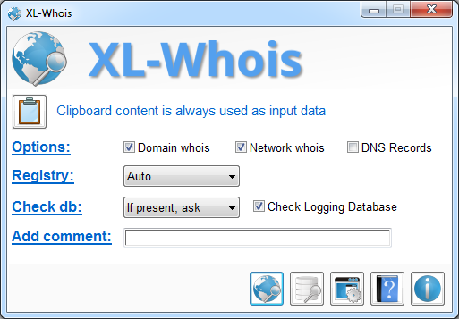

|
XL-Whois
Copyright (c) 2015-2016 Alain Rioux
|
| See Credits about the logo |
- XL-Whois is a tool to make multiple advanced whois requests;
- It supports Domain Whois, Network Whois and DNS Records;
- Object for the requests are parsed from the clipboard content so time to prepare
the request is reduced to minimum;
- Supported objects are IPv4, hostname, domain name and IPv6. Domain extensions
for hostname and domain name are validated from a common database that can be
updated every time you use the tool;
- XL-Whois stores responses from Network Whois requests in database and cache.
The database can be imported and exported so you can share your data between
your computer or with other people;
- XL-Whois can also log your request that you can comment and those logs are
stored in a database;
- Before making a request, XL-Whois verifies your databases and informs you if
you already made the same request and the result you got;
- Network Whois Database can be viewed, searched, filtered, analysed and even
data from other Network Whois report obtained by any other tool can be parsed
and added to your database;
See documentation for more details.

XL-Whois doesn't require any installation. In order to start using it, just
run the executable file.
| Version |
Comments |
| 2.2 |
- New Configuration Wizard (when using the tool for the first time)
- New option to force the registry to use for network whois
- Fixed an issue related to whois server database (tld.json) that contains comment lines
- Fixed issues if the user delete the path of Logging database, Whois Database or folder for reports
- Fixed an issue when an ISP is deleted, network whois data was not deleted
- Fixed an issue when an ISP is added, green background in grid was not set
- Fixed an issue with line breaks when an ISP is added from LACNIC
|
| 2.1 |
- Fixed various issues with the Configuration Wizard
- Fixed various issues with database changes in the GUI
|
| 2.0 |
- New taskbar shortcuts
- Whois function is now enabled or disabled depending if there are items in clipboard
- Whois function text is modified with the first parsed item in clipboard
- New shortcut to the "View/Edit clipboard content" window
- Query options can now be selected from the taskbar menu
- New setting options
- Start the tool in taskbar (minimized)
- Customize User-Agent
- Fixed issue with checking update of the Whois Server database on Github
- Fixed some display issues
|
| 1.0 |
First release. |
To translate XL-Whois to other languages:
- In Config Window, use the Export Lang.ini
function. The file will be saved in the same directory of the tool;
- Open the file in any text editor like Notepad;
- Translate each expression at the right of the = symbol;
- The expression on the left side is used by the tool to identify the expression
so do not change it. Also, be sure to have a space between the = symbol
and your expression (ex. Key = Value);
- Authorized characters are alphanumerics, spaces and these symbols: ",", ".", "-",
"!", ",", "(" and ")". Any other character will be deleted;
- For some controls, string length must be the same as original. A longer string could
be truncated if it doesn't match the length of the field;
- The value associated with the translatorName will be used in
the About window to identify you as translator (if you want). You can
also add your email or a short url (ex. YourName (youraddress@email.com));
- Restart the tool so the strings in Lang.ini will be used
instead of the default language.
If you translate the tool and you want to share, contact the author.
Available translations:
To install, save the appropriate Lang.ini file in the same
directory of the tool.
No translation available for the moment.
Copyright (C) 2015-2016 Alain Rioux
This program is free software: you can redistribute it and/or modify
it under the terms of the GNU General Public License as published by
the Free Software Foundation, either version 3 of the License, or
(at your option) any later version.
This program is distributed in the hope that it will be useful,
but WITHOUT ANY WARRANTY; without even the implied warranty of
MERCHANTABILITY or FITNESS FOR A PARTICULAR PURPOSE. See the
GNU General Public License for more details.
You should have received a copy of the GNU General Public License
along with this program. If not, see http://www.gnu.org/licenses/.
If you have any problem, suggestion, comment, or you found a bug in my
utility, you can send a message at http://le-tools.com/about.php.
- For database:
- For icons:
- The main logo of XL-Whois have been created by Icojam (http://www.icojam.com)
and is licensed as "Public Domain". Many other icons come from the same collection
like database search icon, open file icon, create file icon, check update icon
- Clipboard icon has been created by PixelMixer and is distributed as freeware.
- Documentation icon has been created by Oxygen Team (http://www.oxygen-icons.org) and distributed on term of
the GNU Lesser General Public License.
- Select folder and view content directory icon come from Danish Royalty
Free Icons by Jonas Rask Design (http://jonasraskdesign.com). These icons are free to use
in both commercial products as well as personal use.
- Filter icons (use, delete, add) and Search icons (search, search previous,
search next) in the Whois Database Window come from the Fugue Icons collection
by Yusuke Kamiyamane (http://p.yusukekamiyamane.com) and are licensed under a
Creative Commons Attribution 3.0 License.
XL-Whois
Copyright
(c) 2015-2016 Alain Rioux